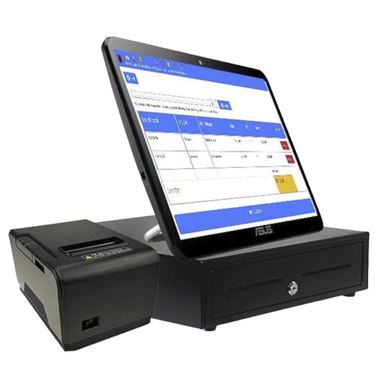
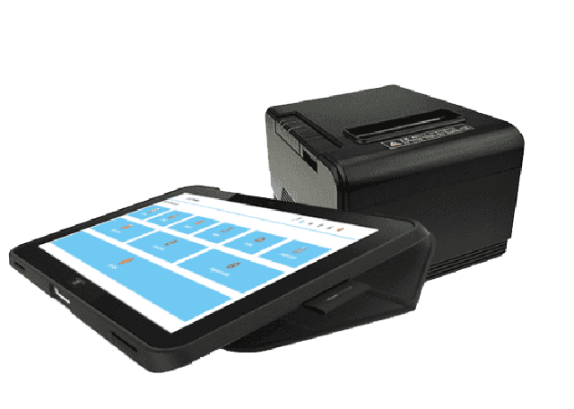
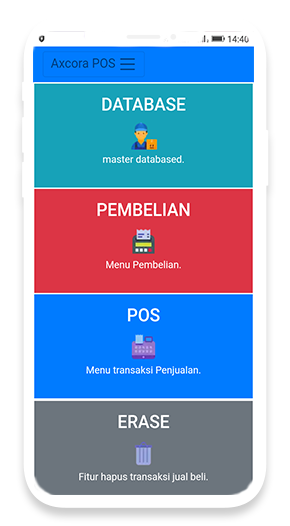
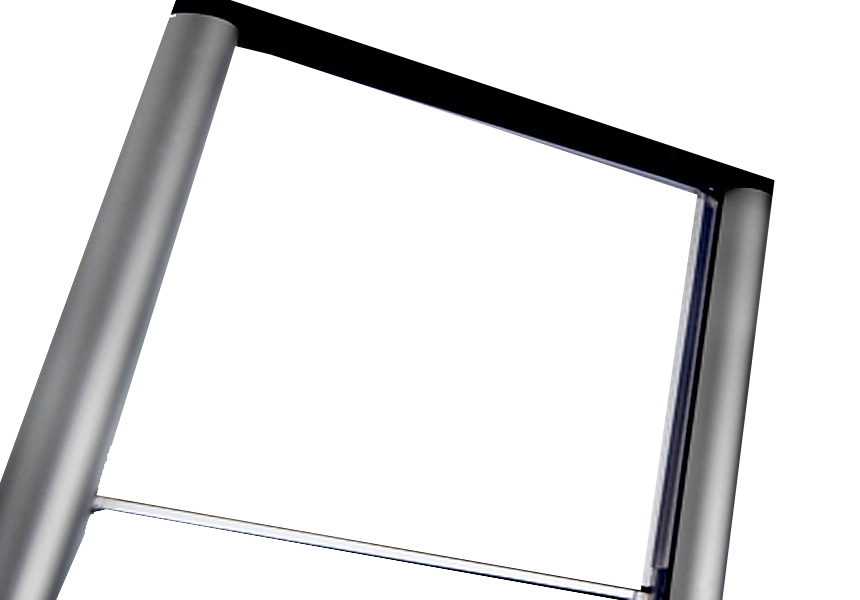

Hardware MESIN KASIR SET LENGKAP Kebutuhan akan mesin kasir online dan mesin kasir offline dalam menunjang usaha semakin mudah dengan kompleks package set yang kami sediakan untuk berbagai bidang bisnis dan usaha . apa kelebihan dari mesin kasir set kami adalah menggunakan technology terbaru dan sudah termasuk installasi setting hingga free aplikasi yang bisa kamu pilih sesuai dengan kebutuhan usaha mu. saat nya menggunakan mesin kasir untuk upgrade bisnis mu. Dan kini saat nya pilih paket lengkap mesin kasir. Touchscreen POS  Sebuah mesin kasir technology dengan menggunakan touchscreen all in one pos point of sale system persembahan dari ASUS semakin mewah dan elegan dengan desain stylish dan fashionable ini lah mesin kasir terbaik dalam digunakan menunjang usaha dan bisnis mu, sensitf touchscreen memberikan kemudahan dan kecapatan dalam bertransaksi via all in one touchscreen pos by asus semakin lebih baik. More info Touchscreen POS → HYBRID TABLET POS  Mesin kasir hybrid technology memungkinkan ber operasi tanpa menggunakan aliran listrik semakin mobile dan portable dalam digunakan, persembahan by hewllet packard tablet windows OS semakin kuat awet dan tahan lama dalam digunakan menunjang usaha dan pembukuan mu, metode koneksi lengkap memudahkan digunakan dengan bluetooth maupun via wifi printer semakin ringkas tanpa hadirnya kabel dan aliran listrik , inilah modern hybrid technology untuk usaha mu. More info Hybrid POS → PORTABLE POS Solusi all in one portable mesin kasir modern dalam digunakan bertransaksi dengan cepat dan dengan pembukuan yang lengkap memuhdakan dalam setiap aktivitas pembukuan , inilah era mesin kasir portable modern dalam digunakan, include dengan mini printer kasir tersemat dalam satu casing untuk mencetak struk kasir semakin kompleks pada point of sale management system mu. More info Portable POS → MOBILE POS  Technology applikasi kasir online yang biasa disebut dengan mesin kasir online dalam kebutuhan kemudahan akses dan bertransaksi via smartphone android iphone hingga mesin kasir windows dalam operasionalnya semakin mobile untuk bertransaksi hingga cek laporan laporan dan pembukuan detail mu secara langsung via mesin kasir online real time ini. More info Mobile POS → ALARM SECURITY  Alarm sensor membantu mu dalam kebutuhan akan keamanan aset produk produk mu dari tangan pencuri, semakin memudahkan dengan sensitifnya system digunakan, dapat bekerja dengan cepat untuk menangkap langsung pencuri include dengan barang buktinya semakin aman digunakan pada usaha mu. More info Alarm → Pastikan memilih mesin kasir yang disesuaikan dengan kebutuhan usaha dan tentunya disesuaikan dengan jumlah transaksi perhari, touchsceen pos dapat digunakan untuk usaha dengan transaksi ramai,portable dan hybrid tablet pos dipergunakan pada usaha kecil dalam kebutuhan nya, mobile pos untuk anda yang menginginkan online system. mesinkasir.github.io PLAY ALL VIDEO DEMO →